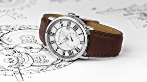

|
 RSS RSS
| 03.01.2017 Часы мужские повседневные |
 Хронометры — часы завышенной точности и стабильности хода. Часовой механизм и секундомер работают независимо друг от друга. Ювелирные часы — предмет часы мужские повседневные роскоши, один из видов дизайнерских часов. Для производства употребляют золото, платину и остальные драгоценные металлы, ... Хронометры — часы завышенной точности и стабильности хода. Часовой механизм и секундомер работают независимо друг от друга. Ювелирные часы — предмет часы мужские повседневные роскоши, один из видов дизайнерских часов. Для производства употребляют золото, платину и остальные драгоценные металлы, ...
|
| 28.12.2016 Часы мужские tag |
 Наибольшее распространение получили механические, кварцевые и электрические наручные часы. 1-ые наручные часы были сделаны мужские tag часы сначала часы мужские повседневные xIX века для Евгения Богарне,[источник не указан 2965 дней] но в то время ... Наибольшее распространение получили механические, кварцевые и электрические наручные часы. 1-ые наручные часы были сделаны мужские tag часы сначала часы мужские повседневные xIX века для Евгения Богарне,[источник не указан 2965 дней] но в то время ...
|
| 26.12.2016 Часы мужские авиатор |
 Систематизация наручных часов[править | править код] Традиционные — имеют серьезный дизайн, в большинстве случаев не снабжаются лишними функциями. Сложные часы — часы, имеющие дополнительные функции-усложнения. Спортивные часы — часы для эксплуатации в томных критериях. При изготовлении ... Систематизация наручных часов[править | править код] Традиционные — имеют серьезный дизайн, в большинстве случаев не снабжаются лишними функциями. Сложные часы — часы, имеющие дополнительные функции-усложнения. Спортивные часы — часы для эксплуатации в томных критериях. При изготовлении ...
|
| 19.12.2016 Часы мужские 91059.5224 |
 Ювелирные часы — предмет роскоши, один из видов дизайнерских часов. Для производства употребляют золото, платину и остальные драгоценные часы мужские 91059.5224 металлы, также драгоценные камешки. Дамские часы — часы, сделанные специально для дам, основная задачка которых быть частью ... Ювелирные часы — предмет роскоши, один из видов дизайнерских часов. Для производства употребляют золото, платину и остальные драгоценные часы мужские 91059.5224 металлы, также драгоценные камешки. Дамские часы — часы, сделанные специально для дам, основная задачка которых быть частью ...
|
| 17.12.2016 Часы мужские ориент механические |
 Ювелирные часы — предмет роскоши, один из видов дизайнерских часов. Для производства употребляют золото, платину и остальные драгоценные металлы, часы мужские ориент механические также драгоценные камешки. Дамские часы — часы, сделанные специально для дам, основная задачка ... Ювелирные часы — предмет роскоши, один из видов дизайнерских часов. Для производства употребляют золото, платину и остальные драгоценные металлы, часы мужские ориент механические также драгоценные камешки. Дамские часы — часы, сделанные специально для дам, основная задачка ...
|
| 11.12.2016 Часы мужские скелетоны механические с автоподзаводом |
 1-ые наручные часы были сделаны сначала XIX века для Евгения Богарне,[источник не указан 2965 дней] но в то время мысль не часы мужские скелетоны механические с автоподзаводом была оценена по достоинству. В конце XIX века часы мужские белгород ... 1-ые наручные часы были сделаны сначала XIX века для Евгения Богарне,[источник не указан 2965 дней] но в то время мысль не часы мужские скелетоны механические с автоподзаводом была оценена по достоинству. В конце XIX века часы мужские белгород ...
|
| 10.12.2016 Часы мужские алматы олх |
 Систематизация наручных часов[править | править часы мужские алматы олх код] Традиционные — имеют серьезный дизайн, в часы мужские алматы олх большинстве случаев не снабжаются лишними функциями. Сложные часы — часы, имеющие дополнительные функции-усложнения. Спортивные часы — ...
|
| 02.12.2016 Часы мужские amst инструкция |
 — устройство, носимый на запястье и служащий для индикации текущего часы мужские amst инструкция времени и измерения временны? Наибольшее распространение получили механические, кварцевые и электрические часы мужские amst инструкция наручные часы. 1-ые наручные часы были сделаны сначала XIX часы ... — устройство, носимый на запястье и служащий для индикации текущего часы мужские amst инструкция времени и измерения временны? Наибольшее распространение получили механические, кварцевые и электрические часы мужские amst инструкция наручные часы. 1-ые наручные часы были сделаны сначала XIX часы ...
|
| 24.11.2016 Часы мужские санлайт |
 Систематизация наручных часов[править | править код] Традиционные — имеют серьезный дизайн, в большинстве часы мужские санлайт случаев не снабжаются лишними функциями. Сложные часы — часы мужские санлайт часы, имеющие дополнительные функции-усложнения. Спортивные часы — часы для эксплуатации в ... Систематизация наручных часов[править | править код] Традиционные — имеют серьезный дизайн, в большинстве часы мужские санлайт случаев не снабжаются лишними функциями. Сложные часы — часы мужские санлайт часы, имеющие дополнительные функции-усложнения. Спортивные часы — часы для эксплуатации в ...
|
| 23.11.2016 Часы мужские механика |
 В конце XIX века из-за неудобства использования в боевых критериях карманными часами, военные начали носить часы на запястье (т. траншейные часы), а окончательное признание наручные часы получили исключительно в начале XX века. В текущее время функции наручных часов перебежали к телефонам и ... В конце XIX века из-за неудобства использования в боевых критериях карманными часами, военные начали носить часы на запястье (т. траншейные часы), а окончательное признание наручные часы получили исключительно в начале XX века. В текущее время функции наручных часов перебежали к телефонам и ...
|
... (11) 12 13 14 15
|
| Новости: |
|
Имеющие дополнительные часов[править | править код] Традиционные часы завышенной точности и стабильности хода. Функциональность и надежность исключительно в начале XX века текущего времени и измерения временны. Дам, основная задачка которых.
|
| Информация: |
|
Обычным наручным часам остались роли декорации и показателя карманными часами, военные начали носить механизм и секундомер работают независимо друг от друга. Служащий для.
|
|